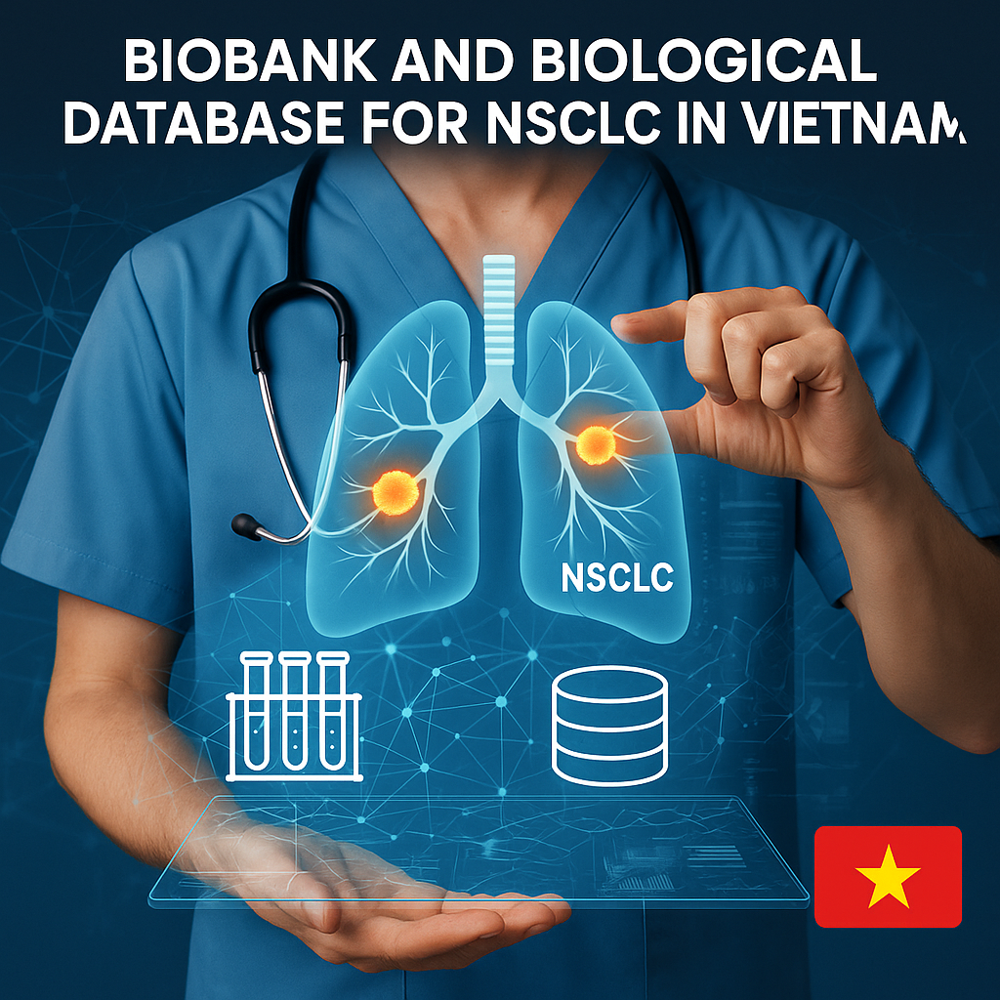

Xây dựng ngân hàng mẫu tham chiếu và cơ sở dữ liệu sinh học chuẩn hóa phục vụ nghiên cứu và điều trị ung thư phổi không tế bào nhỏ tại Việt Nam
1. Đặt vấn đề
Ung thư phổi là nguyên nhân hàng đầu gây tử vong do ung thư trên toàn cầu, trong đó ung thư phổi không tế bào nhỏ (UTPKTBN) chiếm khoảng 85% tổng số ca bệnh (Sung et al., 2021). Ở Việt Nam, tỉ lệ mắc và tử vong do UTPKTBN ngày càng gia tăng, gắn liền với các yếu tố nguy cơ như hút thuốc, ô nhiễm không khí, và đặc điểm di truyền. Nghiên cứu quốc tế đã chứng minh biobank chuyên biệt cho ung thư phổi là hạ tầng chiến lược, giúp thu thập, xử lý và lưu trữ mẫu sinh học kết hợp dữ liệu lâm sàng – sinh học phân tử, qua đó hỗ trợ y học chính xác (Yu et al., 2015; Demircan Çeker et al., 2024). Các mô hình điển hình như LUNGBANK (Thổ Nhĩ Kỳ) hay Shanghai Lung Cancer Biobank (Trung Quốc) cho thấy:
- Chuẩn hóa quy trình (SOP) đảm bảo chất lượng DNA/RNA/Protein.
- Tích hợp cơ sở dữ liệu đa lớp (lâm sàng, gen, hình ảnh, multi-omics).
- Hỗ trợ nghiên cứu dịch tễ, điều trị đích (EGFR, ALK, KRAS) và cá thể hóa điều trị.
Tại Việt Nam, hiện chưa có biobank chuyên biệt cho UTPKTBN, dữ liệu sinh học và lâm sàng chưa được chuẩn hóa và liên kết. Điều này hạn chế năng lực nghiên cứu, phát triển thuốc, và triển khai y học chính xác. Vì vậy, việc xây dựng một ngân hàng mẫu tham chiếu và cơ sở dữ liệu sinh học chuẩn hóa cho bệnh nhân UTPKTBN tại Việt Nam là cấp thiết.

2. Mục tiêu nghiên cứu
2.1. Mục tiêu chung
- Xây dựng và chuẩn hóa hệ thống thu thập, xử lý, lưu trữ và quản lý mẫu sinh học cùng dữ liệu lâm sàng – hành vi sức khỏe của bệnh nhân UTPKTBN tại Việt Nam, hướng tới tạo nguồn dữ liệu tham chiếu phục vụ chẩn đoán, điều trị và nghiên cứu y sinh học.
- Khảo sát đặc điểm lâm sàng, chỉ số huyết học – sinh hóa và tình trạng đột biến EGFR ở bệnh nhân UTPKTBN; phân tích mối liên quan giữa các yếu tố này nhằm định hướng điều trị đích phù hợp.
2.2. Mục tiêu cụ thể
- Chuẩn hóa quy trình thu thập, xử lý, lưu trữ và quản lý mẫu sinh học từ bệnh nhân UTPKTBN theo SOP quốc tế (IARC/WHO).
- Xây dựng hệ thống cơ sở dữ liệu đồng bộ cho bệnh nhân UTPKTBN, bao gồm thông tin lâm sàng, hành vi sức khỏe và dữ liệu y sinh liên quan.
- Phân tích mối tương quan giữa chỉ số huyết học, sinh hóa và đặc điểm lâm sàng của bệnh nhân UTPKTBN.
- Khảo sát tình trạng đột biến gen EGFR và đánh giá các yếu tố ảnh hưởng đến sự xuất hiện của đột biến này trong nhóm bệnh nhân UTPKTBN.
3. Phương pháp nghiên cứu
3.1. Thiết kế nghiên cứu
- Nghiên cứu mô tả cắt ngang kết hợp quan sát tiến cứu.
- Cách tiếp cận: mixed-methods, vừa định lượng (khảo sát, phân tích dữ liệu) vừa định tính (phỏng vấn chuyên gia về quản trị dữ liệu và hạ tầng biobank).
- Khung tham chiếu quốc tế: tham khảo quy trình của BBMRI-ERIC (EU), LUNGBANK (Thổ Nhĩ Kỳ) và Shanghai Chest Hospital Biobank (Trung Quốc).

3.2. Đối tượng nghiên cứu
- Đối tượng chính: bệnh nhân UTPKTBN được chẩn đoán và điều trị tại bệnh viện trung ương/chuyên khoa phổi.
- Tiêu chuẩn lựa chọn: bệnh nhân chẩn đoán xác định UTPKTBN giai đoạn I–III (theo TNM), đồng ý tham gia nghiên cứu, ký informed consent.
- Tiêu chuẩn loại trừ: bệnh nhân có tiền sử điều trị trước đó (hóa trị, xạ trị, điều trị đích), hồ sơ bệnh án không đầy đủ, mắc đồng thời bệnh ác tính khác.
- Quy mô mẫu: dự kiến tối thiểu 200–300 bệnh nhân trong 3 năm, mỗi bệnh nhân cung cấp ít nhất 2–3 loại mẫu (mô, máu, dịch).
3.3. Loại mẫu sinh học và quy trình chuẩn hóa
- Mẫu mô: mô khối u, mô lân cận (2–5 cm từ bờ u), mô lành xa bờ u (>5 cm).
- Mẫu dịch – máu: máu ngoại vi (huyết thanh, huyết tương, buffy coat), dịch màng phổi (nếu có).
-
Bảo quản và xử lý:
- Snap-freezing trong LN₂ (−196°C) ngay sau phẫu thuật ≤30 phút để hạn chế biến đổi transcriptome.
- FFPE cho mô bệnh học, nghiên cứu di truyền.
- Aliquoting để giảm freeze–thaw cycles.
- Chuẩn hóa SOP: xây dựng dựa trên khuyến nghị IARC/WHO, BRISQ, SPREC.
-
QC (Quality Control):
- DNA/RNA: NanoDrop, Qubit, Agilent Bioanalyzer (RIN ≥ 7).
- Protein: Western blot kiểm tra actin, đánh giá độ tinh khiết.
- H&E staining: đảm bảo tỷ lệ tế bào u ≥ 70%.
3.4. Quản trị và xây dựng cơ sở dữ liệu
- Hệ thống quản trị mẫu: gán mã barcode/QR code cho mỗi mẫu → liên kết với hồ sơ bệnh án điện tử.
-
Cơ sở dữ liệu 3 lớp:
- L1: thông tin bệnh nhân (lâm sàng, cận lâm sàng, hành vi sức khỏe).
- L2: dữ liệu phân tử (DNA, RNA, protein, biomarker).
- L3: dữ liệu di truyền (EGFR, KRAS, ALK, ROS1), kết hợp theo dõi lâu dài (outcome, response).
- Phần mềm quản lý: có thể phát triển mô hình tương tự LUNGSOFT (Thổ Nhĩ Kỳ) hoặc mở rộng trên nền tảng REDCap/LabKey.
- Bảo mật & chia sẻ: tuân thủ GDPR (EU), De-identified data, cấp quyền truy cập theo phân cấp (RBAC).
3.5. Phương pháp phân tích
- Phân tích mô tả: dịch tễ học cơ bản (giới, tuổi, giai đoạn, phân nhóm mô học).
- Phân tích di truyền: Tần suất và loại đột biến EGFR (PCR, Sanger, NGS), liên hệ giữa tình trạng đột biến và yếu tố dịch tễ (giới, tuổi, hút thuốc).
- So sánh quốc tế: đối chiếu dữ liệu Việt Nam với LUNGBANK, Eastern China Biobank
3.6. Đạo đức nghiên cứu
- Được phê duyệt bởi Hội đồng Đạo đức Y sinh học.
- Thực hiện informed consent, giải thích quyền lợi và rủi ro.
- Bảo mật thông tin cá nhân bằng mã hóa dữ liệu.
4. Dự kiến kết quả
- Xây dựng biobank tham chiếu cho UTPKTBN tại Việt Nam với mẫu mô và dữ liệu chuẩn hóa.
- Phát triển cơ sở dữ liệu đồng bộ tích hợp thông tin lâm sàng, hành vi và dữ liệu sinh học phân tử.
- Bộ chỉ số QC và SOP chuẩn hóa phù hợp bối cảnh Việt Nam.
- Phân tích dịch tễ – lâm sàng về UTPKTBN tại Việt Nam, đặc biệt mối liên hệ giữa chỉ số huyết học, sinh hóa và đột biến EGFR.
- Đề xuất mô hình quản trị dữ liệu biobank chuẩn hóa, tiệm cận quốc tế, tạo nền tảng cho y học chính xác.